6 MongoDB 事务开发
1 事务开发:写操作事务
什么是 writeConcern ?
writeConcern 决定一个写操作落到多少个节点上才算成功。writeConcern 的取值包括:
- 0: 发起写操作，不关心是否成功;
- 1~集群最大数据节点数: 写操作需要被复制到指定节点数才算成功;
- majority: 写操作需要被复制到大多数节点上才算成功。
发起写操作的程序将阻塞到写操作到达指定的节点数为止
默认行为
3 节点复制集不作任何特别设定(默认值):
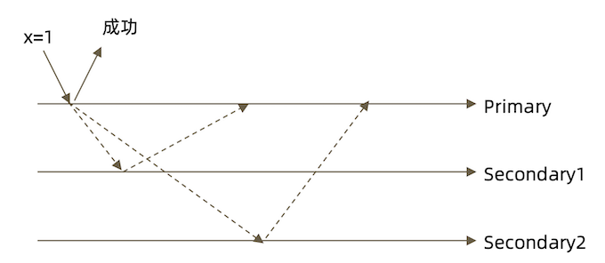
w: "majority"
大多数节点确认模式
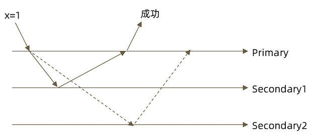
w: "all"
全部节点确认模式
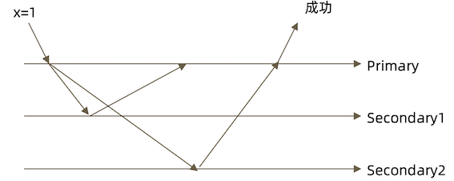
j:true
writeConcern 可以决定写操作到达多少个节点才算成功，journal 则定义如何才算成功。取值包括:
- true:写操作落到
journal文件中才算成功; - false:写操作到达内存即算作成功。
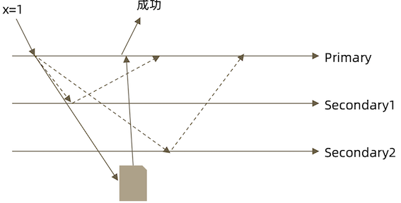
writeConcern 的意义
对于5个节点的复制集来说，写操作落到多少个节点上才算是安全的?
- 1
- 2
- 3✓
- 4✓
- 5✓
- majority ✓
writeConcern 实验
在复制集测试writeConcern参数
db.test.insert( {count: 1}, {writeConcern: {w: "majority"}})
db.test.insert( {count: 1}, {writeConcern: {w: 3 }})
db.test.insert( {count: 1}, {writeConcern: {w: 4 }})
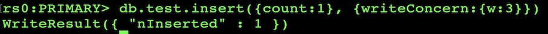

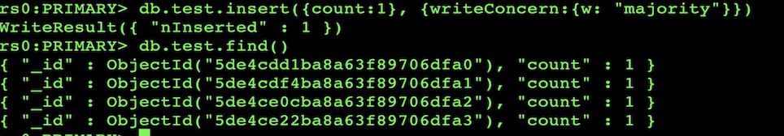
查看集群成员
conf.members
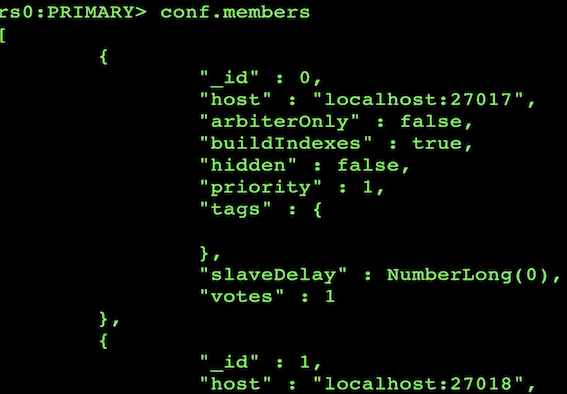
配置延迟节点，模拟网络延迟(复制延迟)
conf=rs.conf()
conf.members[2].slaveDelay = 5
conf.members[2].priority = 0
rs.reconfig(conf)
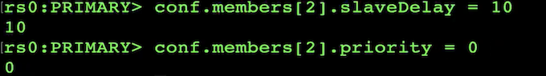
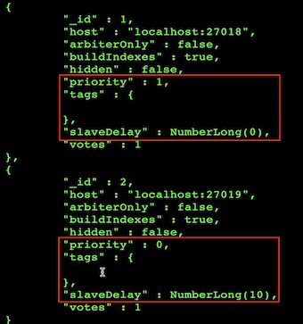
10s 后延迟插入
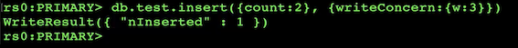
观察复制延迟下的写入，以及timeout参数
db.test.insert( {count: 1}, {writeConcern: {w: 3}})
db.test.insert( {count: 1}, {writeConcern: {w: 3, wtimeout:3000 }})
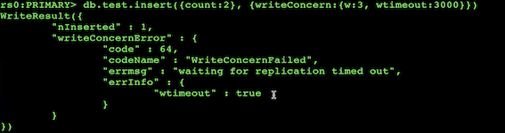
注意事项
- 虽然多于半数的
writeConcern都是安全的，但通常只会设置majority，因为这是等待写入延迟时间最短的选择; - 不要设置
writeConcern等于总节点数，因为一旦有一个节点故障，所有写操作都将失败; writeConcern虽然会增加写操作延迟时间，但并不会显著增加集群压力，因此无论是否等待，写操作最终都会复制到所有节点上。设置writeConcern只是让写操作 等待复制后再返回而已;- 应对重要数据应用
{w:“majority”}，普通数据可以应用{w:1}以确保最佳性能。
2 事务开发:读操作事务之一 readPreference
综述
在读取数据的过程中我们需要关注以下两个问题:
- 从哪里读?
-
什么样的数据可以读?
-
第一个问题是是由 readPreference 来解决
- 第二个问题则是由 readConcern 来解决
什么是 readPreference?
readPreference 决定使用哪一个节点来满足 正在发起的读请求。可选值包括:
- primary:只选择主节点;
- primaryPreferred:优先选择主节点，如果不可用则选择从节点;
- secondary:只选择从节点;
secondaryPreferred:优先选择从节点， 如果从节点不可用则选择主节点;- nearest:选择最近的节点;
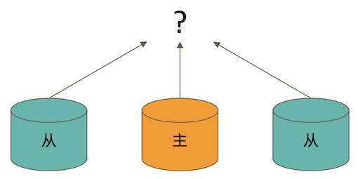
readPreference 场景举例
- 用户下订单后马上将用户转到订单详情页——primary/primaryPreferred。因为此时从节点可能还没复制到新订单;
- 用户查询自己下过的订单——secondary/secondaryPreferred。查询历史订单对 时效性通常没有太高要求;
- 生成报表——secondary。报表对时效性要求不高，但资源需求大，可以在从节点 单独处理，避免对线上用户造成影响;
- 将用户上传的图片分发到全世界，让各地用户能够就近读取——nearest。每个地区 的应用选择最近的节点读取数据。
readPreference 与 Tag
readPreference 只能控制使用一类节点。Tag 则可以将节点选择控制 到一个或几个节点。考虑以下场景:
- 一个5个节点的复制集;
- 3个节点硬件较好，专用于服务线上客户;
- 2个节点硬件较差，专用于生成报表
可以使用 Tag 来达到这样的控制目的:
- 为3个较好的节点打上
{purpose:"online"}; - 为2个较差的节点打上
{purpose:"analyse"}; - 在线应用读取时指定online，报表读取时指定reporting。
更多信息请参考文档: readPreference
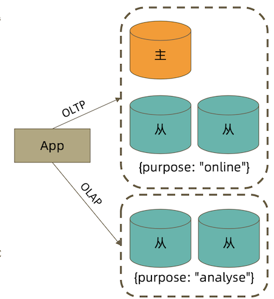
readPreference 配置
通过 MongoDB 的连接串参数:
mongodb://host1:27107,host2:27107,host3:27017/?replicaSet=rs&readPreference=secondary
通过 MongoDB 驱动程序 API:
MongoCollection.withReadPreference(ReadPreferencereadPref)
Mongo Shell:
db.collection.find({}).readPref("secondary")
readPreference 实验: 从节点读
- 主节点写入
{x:1},观察该条数据在各个节点均可见
On primary to read secondary: Okay
- 在两个从节点分别执行
db.fsyncLock()来锁定写入(同步)
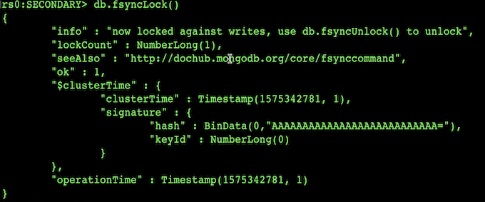
- 主节点写入
{x:2}
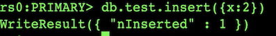
- 次节点无法读到新的新插入的数据， 但是主节点可以读到
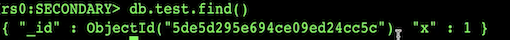
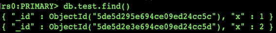
db.test.find({a:123})db.test.find({a:123}).readPref("secondary")
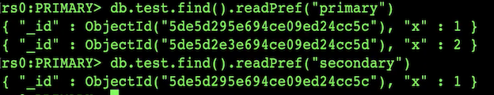
- 解除从节点锁定
db.fsyncUnlock()
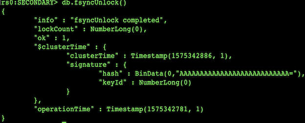
db.test.find({a:123}).readPref("secondary”)
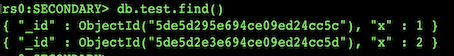
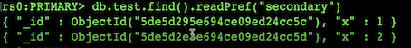
注意事项
- 指定readPreference时也应注意高可用问题。例如将readPreference指定primary，则发生故障转移不存在 primary 期间将没有节点可读。如果业务允许，则应选择 primaryPreferred;
- 使用Tag时也会遇到同样的问题，如果只有一个节点拥有一个特定Tag，则在这个节点失效时 将无节点可读。这在有时候是期望的结果，有时候不是。例如:
- 如果报表使用的节点失效，即使不生成报表，通常也不希望将报表负载转移到其他节点上，此时只有一个 节点有报表 Tag 是合理的选择;
- 如果线上节点失效，通常希望有替代节点，所以应该保持多个节点有同样的Tag;
- Tag有时需要与优先级、选举权综合考虑。例如做报表的节点通常不会希望它成为主节点，则 优先级应为 0
3 事务开发:读操作事务之二
什么是 readConcern?
在 readPreference 选择了指定的节点后，readConcern 决定这个节点上的数据哪些 是可读的，类似于关系数据库的隔离级别。可选值包括:
- available:读取所有可用的数据;
- local:读取所有可用且属于当前分片的数据;
- majority:读取在大多数节点上提交完成的数据;
- linearizable:可线性化读取文档;
- snapshot:读取最近快照中的数据;
readConcern: local 和 available
在复制集中 local 和 available 是没有区别的。两者的区别主要体现在分片集上。考虑以下场景:
- 一个
chunkx正在从shard1向shard2迁移; - 整个迁移过程中
chunkx中的部分数据会在shard1和shard2中同时存在，但源分片shard1仍然是 chunk x 的负责方:- 所有对
chunkx的读写操作仍然进入shard1; config中记录的信息chunkx仍然属于shard1;
- 所有对
- 此时如果读shard2，则会体现出local和available的区别:
local:只取应该由shard2负责的数据(不包括x);available:shard2上有什么就读什么(包括x);
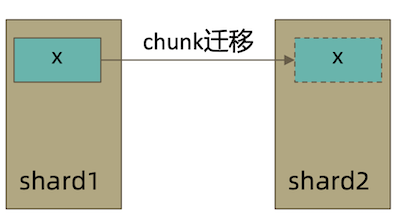
注意事项:
- 虽然看上去总是应该选择local，但毕竟对结果集进行过滤会造成额外消耗。在一些无关紧要的场景(例如统计)下，也可以考虑 available;
MongoDB<=3.6不支持对从节点使用{readConcern:"local"};- 从主节点读取数据时默认
readConcern是local，从从节点读取数据时默认readConcern是available(向前兼容原因)。
readConcern: majority
只读取大多数据节点上都提交了的数据。考虑如下场景:
- 集合中原有文档
{x: 0}; - 将x值更新为 1;
如果在各节点上应用{readConcern: "majority"}来读取数据:
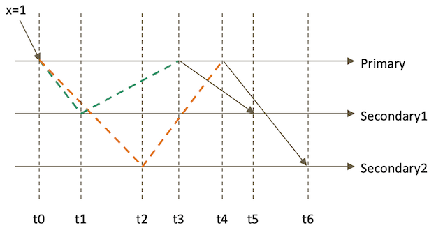
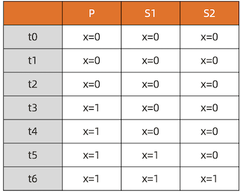
readConcern: majority 的实现方式
考虑 t3 时刻的 Secondary1，此时:
- 对于要求
majority的读操作，它将返回x=0; - 对于不要求
majority的读操作，它将返回x=1;
如何实现?
- 节点上维护多个 x 版本，MVCC 机制
- MongoDB 通过维护多个快照来链接不同的版本:
- 每个被大多数节点确认过的版本都将是一个快照
- 快照持续到没有人使用为止才被删除;
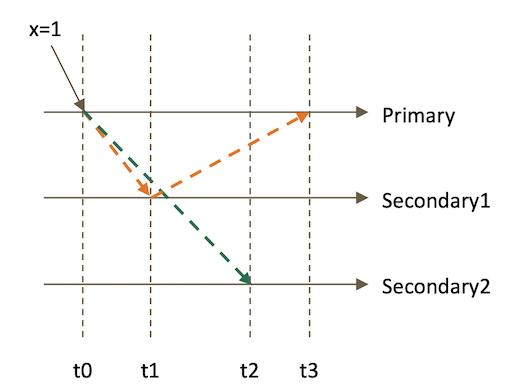
实验: readConcern : "majority" vs "local"
- 安装3节点复制集。
- 注意配置文件内server参数
enableMajorityReadConcern
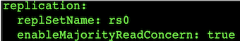
- 将复制集中的两个从节点使用
db.fsyncLock()锁住写入(模拟同步延迟)
readConcern 验证
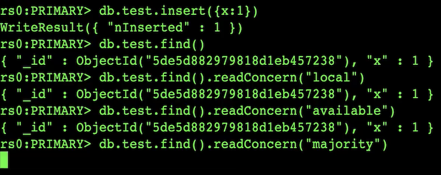
因为从节点被锁的原因， findConcern("majority") 会卡住
- 在某一个从节点上执行
db.fsyncUnlock()
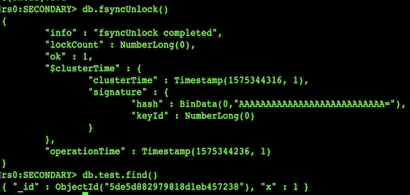
结论:
- 使用local参数，则可以直接查询到写入数据
- 使用majority，只能查询到已经被多数节点确认过的数据
- update与remove与上同理。
readConcern: majority 与脏读
MongoDB 中的回滚:
- 写操作到达大多数节点之前都是不安全的，一旦主节点崩溃，而从节还没复制到该 次操作，刚才的写操作就丢失了;
- 把一次写操作视为一个事务，从事务的角度，可以认为事务被回滚了。
所以从分布式系统的角度来看，事务的提交被提升到了分布式集群的多个节点级别的“提交”，而不再是单个节点上的“提交”。
在可能发生回滚的前提下考虑脏读问题:
- 如果在一次写操作到达大多数节点前读取了这个写操作，然后因为系统故障该操作 回滚了，则发生了脏读问题;
使用 {readConcern: "majority"}可以有效避免脏读
readConcern: 如何实现安全的读写分离
考虑如下场景:
- 向主节点写入一条数据;
- 立即从从节点读取这条数据。
如何保证自己能够读到刚刚写入的数据?
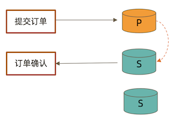
下述方式有可能读不到刚写入的订单
db.orders.insert({ oid: 101, sku: "kite", q: 1})
db.orders.find({oid:101}).readPref("secondary")
使用 writeConcern + readConcern majority 来解决
db.orders.insert({ oid: 101, sku: "kiteboar", q: 1}, {writeConcern:{w: "majority"}})
db.orders.find({oid:101}).readPref("secondary").readConcern("majority")
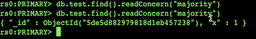
> db.tx.insert([{x:1},{x:2}])
BulkWriteResult({
"writeErrors" : [ ],
"writeConcernErrors" : [ ],
"nInserted" : 2,
"nUpserted" : 0,
"nMatched" : 0,
"nModified" : 0,
"nRemoved" : 0,
"upserted" : [ ]
})
> db.tx.find()
{ "_id" : ObjectId("6270754123c7ad7cc7cb0e48"), "x" : 1 }
{ "_id" : ObjectId("6270754123c7ad7cc7cb0e49"), "x" : 2 }
> var session = db.getMongo().startSession()
> session.startTransaction()
> var coll = session.getDatabase("test").getCollection("txt")
> coll.update({x:1}, {$set: {y:1}})
WriteCommandError({
"ok" : 0,
"errmsg" : "Transaction numbers are only allowed on a replica set member or mongos",
"code" : 20,
"codeName" : "IllegalOperation"
})
Transaction numbers are only allowed on a replica set member or mongos
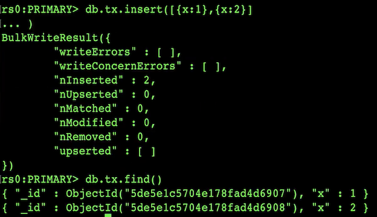
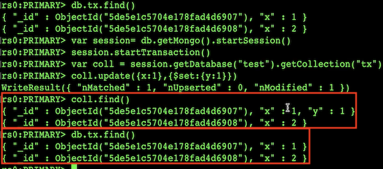
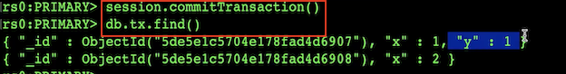
小测试
readConcern 主要关注读的隔离性， ACID 中的 Isolation， 但是是分布式数据库里特有的概念
readCocnern: majority 对应于事务中隔离级别中的哪一级?
- Read Uncommited
- Read Committed
- Repeatable
- Read Seriazable
readConcern: linearizable
只读取大多数节点确认过的数据。和 majority 最大差别是保证绝对的操作线性顺序 – 在写操作自然时间后面的发生的读，一定可以读到之前的写
- 只对读取单个文档时有效;
- 可能导致非常慢的读，因此总是建议配合使用 maxTimeMS;
只读取大多数节点确认过的数据。和 majority 最大差别是保证绝对的操作线性顺序 – 在写操作自然时间后面的发生的读，一定可以读到之前的写
- 只对读取单个文档时有效;
- 可能导致非常慢的读，因此总是建议配合使用 maxTimeMS;
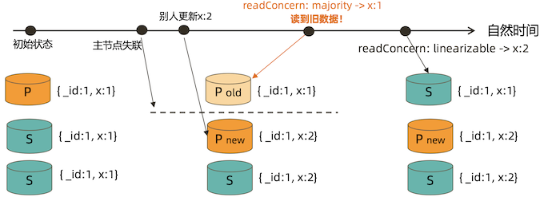
readConcern: snapshot
{readConcern: “snapshot”}只在多文档事务中生效。将一个事务的 readConcern 设置为 snapshot，将保证在事务中的读:
- 不出现脏读;
- 不出现不可重复读;
- 不出现幻读。
因为所有的读都将使用同一个快照，直到事务提交为止该快照才被释放。
readConcern: 小结
- available:读取所有可用的数据
- local:读取所有可用且属于当前分片的数据，默认设置
- majority:数据读一致性的充分保证，可能你最需要关注的
- linearizable:增强处理majority情况下主节点失联时候的例外情况
- snapshot:最高隔离级别，接近于Seriazable
4 事务开发:多文档事务
开始之前......
MongoDB 虽然已经在 4.2 开始全面支持了多文档事务，但并不代表大家应该毫无节制 地使用它。相反，对事务的使用原则应该是:能不用尽量不用。
通过合理地设计文档模型，可以规避绝大部分使用事务的必要性
为什么?事务 = 锁，节点协调，额外开销，性能影响
MongoDB ACID 多文档事务支持
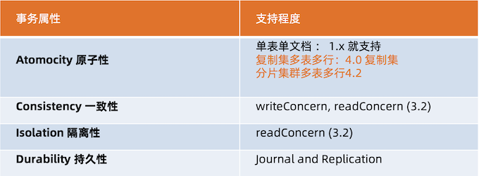
使用方法
MongoDB 多文档事务的使用方式与关系数据库非常相似:
try (ClientSession clientSession = client.startSession()) {
clientSession.startTransaction();
collection.insertOne(clientSession, docOne);
collection.insertOne(clientSession, docTwo);
clientSession.commitTransaction();
}
事务的隔离级别
- 事务完成前，事务外的操作对该事务所做的修改不可访问
- 如果事务内使用
{readConcern: "snapshot"}，则可以达到可重复读Repeatable Read
实验:启用事务后的隔离性
db.tx.insertMany([{ x: 1 }, { x: 2 }]);
var session = db.getMongo().startSession();
session.startTransaction();
var coll = session.getDatabase('test').getCollection("tx");
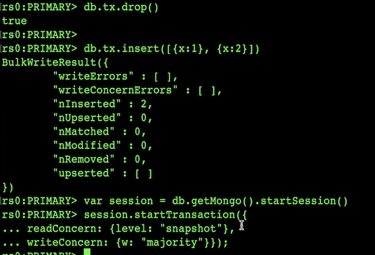
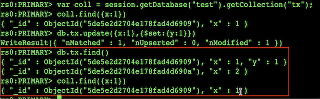
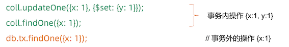
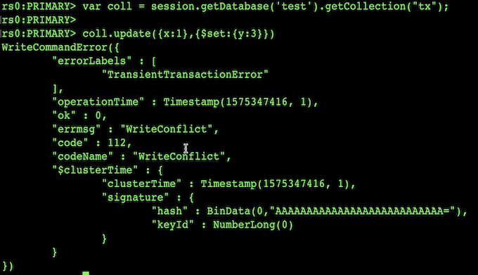
session.abortTransaction();
实验:可重复读 Repeatable Read
MongoDB 的事务错误处理机制不同于关系数据库:
- 当一个事务开始后，如果事务要修改的文档在事务外部被修改过，则事务修改这个 文档时会触发 Abort 错误，因为此时的修改冲突了;
- 这种情况下，只需要简单地重做事务就可以了;
- 如果一个事务已经开始修改一个文档，在事务以外尝试修改同一个文档，则事务以 外的修改会等待事务完成才能继续进行。
实验:写冲突
继续使用上个实验的tx集合
开两个 mongo shell 均执行下述语句
var session = db.getMongo().startSession();
session.startTransaction({ readConcern: {level: "snapshot"},
writeConcern: {w: "majority"}});
var coll = session.getDatabase('test').getCollection("tx");
窗口1:
coll.updateOne({x: 1}, {$set: {y: 1}}); // 正常结束
窗口2:
coll.updateOne({x: 1}, {$set: {y: 2}}); // 异常 – 解决方案:重启事务
窗口1:第一个事务，正常提交
coll.updateOne({x: 1}, {$set: {y: 1}});
窗口2:另一个事务更新同一条数据，异常
coll.updateOne({x: 1}, {$set: {y: 2}});
窗口3:事务外更新，需等待
db.tx.updateOne({x: 1}, {$set: {y: 3}});
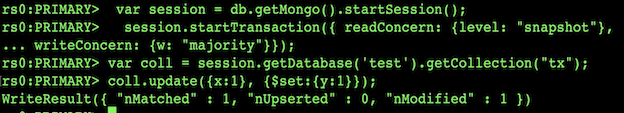
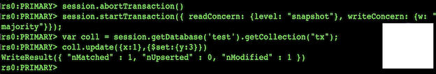
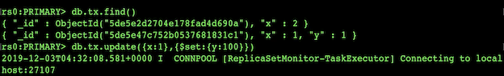
注意事项
- 可以实现和关系型数据库类似的事务场景
- 必须使用与MongoDB4.2兼容的驱动;
- 事务默认必须在60秒(可调)内完成，否则将被取消;
- 涉及事务的分片不能使用仲裁节点;
- 事务会影响chunk迁移效率。正在迁移的chunk也可能造成事务提交失败(重试 即可);
- 多文档事务中的读操作必须使用主节点读;
- readConcern只应该在事务级别设置，不能设置在每次读写操作上。